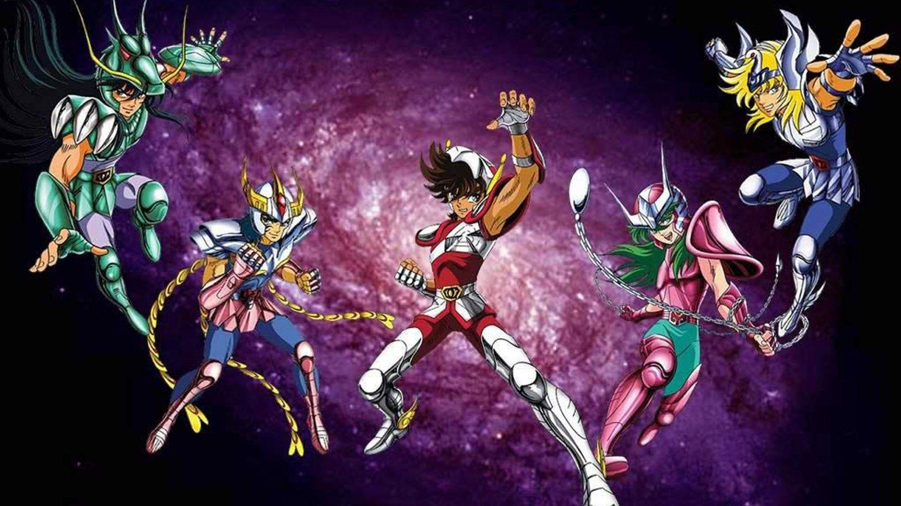
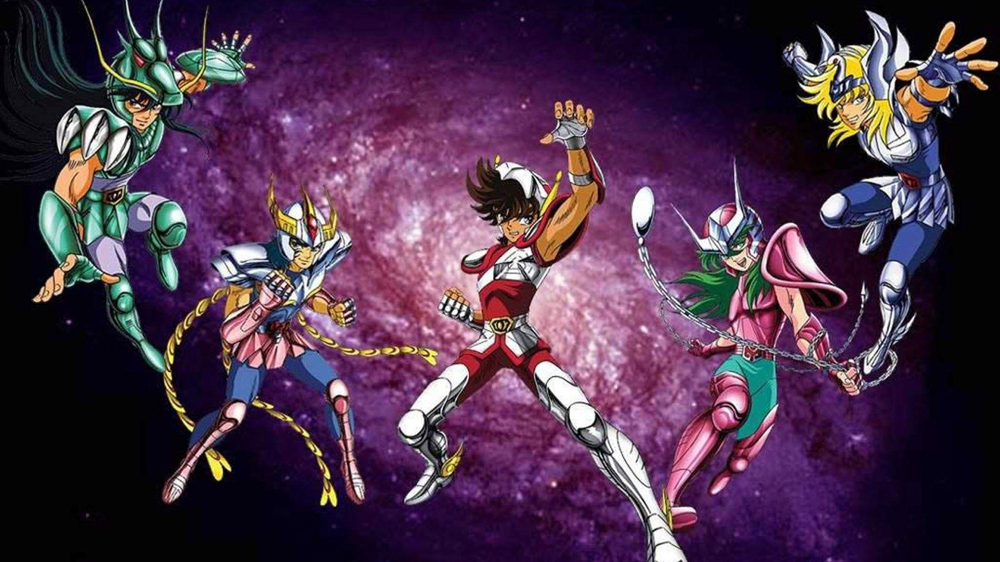
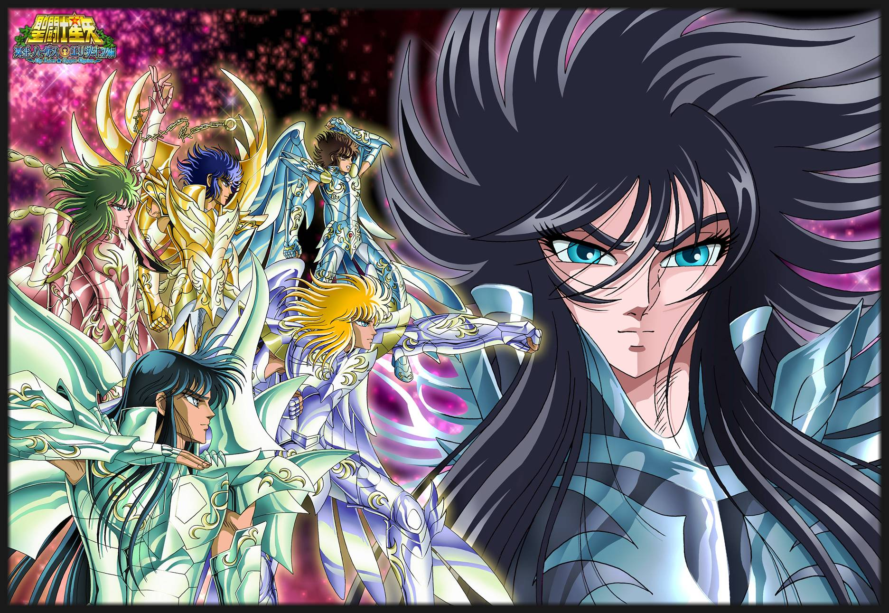
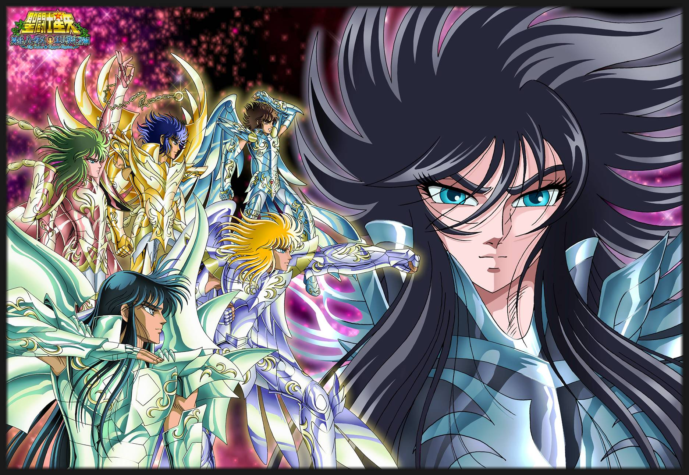
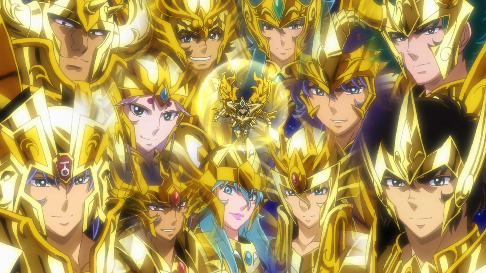
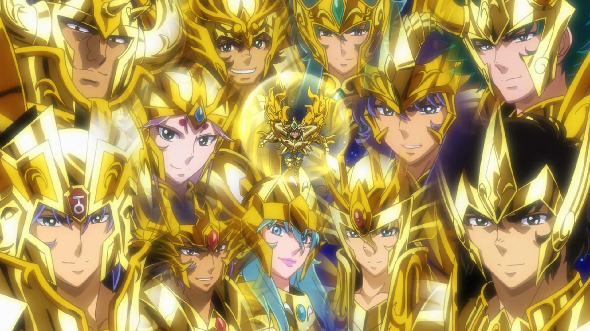

 

 

CAVALEIROS FAN PAGE
Pagina para fans de CDZ
Tudo começou no final do ano de 1985 quando o autor, Masami Kurumada, iniciou a série originalmente chamada Saint Seiya. A primeira aparição aconteceu no dia 19 de novembro de 1985, em anúncio nas páginas da edição 51/85 da revista Weekly Shonen Jump (uma espécie de revista semanal publicada pela Shueisha). Mas foi na edição 01/86, publicada no dia 3 de dezembro de 1985 que o primeiro capítulo foi publicado. Cada revista tinha aproximadamente 400 páginas, com diversas histórias (a maioria era em preto e branco) e os capítulos dos Cavaleiros do Zodíaco foram publicadas até o ano de 1990.
personagems